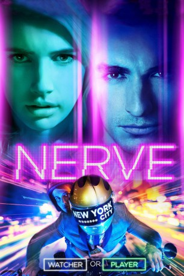

#4549 Nerve
 gesehen am 12.10.2016
gesehen am 12.10.2016
 
 IMDB-Wertung: 6.7 / 10
IMDB-Wertung: 6.7 / 10  Tomatometer: 67
Tomatometer: 67  Metascore: 0
Metascore: 0 
Im Internet macht ein neues, illegales Spiel namens „Nerve“ die Runde, bei dem die Teilnehmer riskante Herausforderungen meistern müssen, während die Welt ihnen dabei zuschaut. Nirgendwo scheint es noch ein anderes Gesprächsthema zu geben und auch die schüchterne Vee (Emma Roberts) bekommt davon Wind. Damit sie endlich mal im Mittelpunkt des Geschehens stehen kann, so wie ihre Freundin Sydney (Emily Meade), meldet sie sich als Spielerin an. Ihrer Mutter (Juliette Lewis) passt gar nicht, was die Tochter da vorhat – und wie zur Bestätigung der mütterlichen Sorgen hat Vee gleich zu Beginn von Nerve die Aufgabe, einen fremden Typen zu küssen. Spontan drückt sie Ian (Dave Franco) ihre Lippen auf den Mund. Von da an versuchen die beiden, die immer gefährlicheren Etappen zu meistern und werden dabei zur Internetsensation. Doch als Vee und Ian aus dem Spiel aussteigen wollen, merken sie, dass es dafür längst zu spät ist…
Jahr: 2016
Dauer: 96 Minuten
FSK: 12
Land: USA Studio: LionsgateTonspuren: DTS - ,
Untertitel:
Auflösung: 1080p (1920x808) Größe: 6502 MB
Genre: Thriller, Abenteuer, Krimi
Regisseur: Henry Joost, Ariel Schulman
Drehbuch: Matthew Newman
Soundtrack:
Darsteller:
 Emma Roberts als Vee
Emma Roberts als Vee Dave Franco als Ian
Dave Franco als Ian Emily Meade als Sydney
Emily Meade als Sydney Miles Heizer als Tommy
Miles Heizer als Tommy Juliette Lewis als Nancy
Juliette Lewis als Nancy- Kimiko Glenn als Liv
 Marc John Jefferies als Wes
Marc John Jefferies als Wes Machine Gun Kelly als Ty
Machine Gun Kelly als Ty- Brian 'Sene' Marc als J.P.
- Ed Squires als Chuck
- Rightor Doyle als Bergdorf Salesman
- Josh Ostrovsky als Dirt Beard
- Eric D'Alessandro als Hype Boi
- Arielle Vandenberg als Bergdorf Sales Lady
- Jonny Beauchamp als Gatekeeper
 Samira Wiley als Hacker Kween
Samira Wiley als Hacker Kween- Wesley Volcy als Taxi Cab Driver
- Deema Aitken als Robbie
 Michael Drayer als Officer McMillan
Michael Drayer als Officer McMillan- Murf Meyer als Times Square Boyfriend
- Ryan Forsythe als Watcher at Dorilton
- Kim Ramirez als Senior Sales Woman
- Casey Neistat als Player / Watcher
- Philip Embury als Player / Watcher
 Nick Austin als Watcher / HS student , uncredited
Nick Austin als Watcher / HS student , uncredited- Amoni B. als Watcher , uncredited
- Aidan T.K. Baker als Big Guy in Diner , uncredited
- Joseph Bruno als Watcher , uncredited
- Ryan Burton als Game Watcher , uncredited
 Marko Caka als Spider-Man Watcher , uncredited
Marko Caka als Spider-Man Watcher , uncredited- Phil Cappadora als The Bear , uncredited
- Danielle DeWulf als Watcher , uncredited
- David Eggers als Watcher , uncredited
- Lauren Gabbard als Highschooler / Watcher , uncredited
- Beata Harju als Watcher , uncredited
 Rosemary Howard als Brenda Wallace , uncredited
Rosemary Howard als Brenda Wallace , uncredited- Renan Kanbay als Watcher , uncredited
 Agron Karameti als High Schooler , uncredited
Agron Karameti als High Schooler , uncredited- Stephanie Katz als Watcher , uncredited
- Austin McCarthy als Golfer , uncredited
 Doris McCarthy als Upscale Shopper , uncredited
Doris McCarthy als Upscale Shopper , uncredited Richard Nixon als Himself , archive footage, uncredited
Richard Nixon als Himself , archive footage, uncredited Toshiko Onizawa als Village Pedestrian , uncredited
Toshiko Onizawa als Village Pedestrian , uncredited- Nadia Pelletier als Watcher , uncredited
 Katrina E. Perkins als Finalé Watcher , uncredited
Katrina E. Perkins als Finalé Watcher , uncredited- Charles Prendergast als Arena Guard , uncredited
- Prashant Rai als Watcher , uncredited
- Benji Sills als High School Student , uncredited
- Mario Tarquinio als Party Guest , uncredited
- Jaelin Taylor als High School Student , uncredited
Datei: X:\2016(N-Z)\Nerve (2016, FSK12, 1920x808).mkv seit 11.10.2016
Festplatte: HD 2016(A-Z)
 Es gibt insgesamt 182 Filme in der Gruppe '2016(N-Z)'
Es gibt insgesamt 182 Filme in der Gruppe '2016(N-Z)'